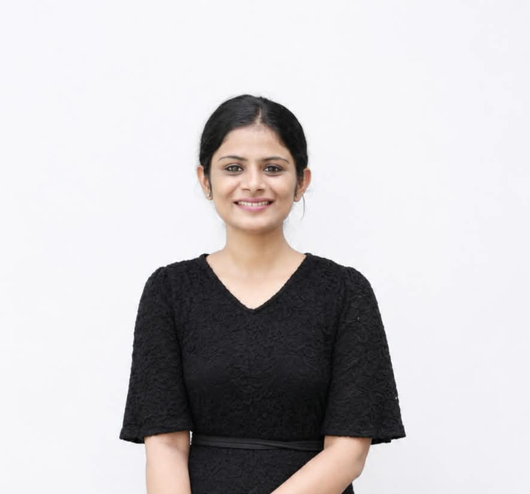

BIOSTATISTICS • CLINICAL DATA • STATISTICAL COMPUTING
DEVU V M
Biostatistics & Clinical Data Analysis
M.Sc. Biostatistics graduate with research internship experience in healthcare data analysis, evidence synthesis and statistical computing using R, SAS, SPSS, Stata and Python.
Open to entry-level opportunities in biostatistics, clinical research and healthcare data analysis.

Biostatistics
Applying statistical methods and programming to turn healthcare data into reliable evidence.
M.Sc. Biostatistics
2024–2026
INTRODUCTION
About Me
I am an M.Sc. Biostatistics graduate with a foundation in mathematics and computer science, and practical exposure gained through research internships and postgraduate projects.
My work includes systematic reviews, meta-analysis, statistical analysis, and the cleaning, validation and interpretation of healthcare data. I have used R, SAS, SPSS, Stata and Python to carry out this work accurately and reproducibly.
My postgraduate research includes an umbrella review and multilevel meta-analyses of yoga interventions for hypertension, and a primary data study on knowledge, attitudes and practices related to dehydration among college students.
As an early-career professional, I am keen to strengthen my skills and contribute to clinical research, healthcare data analysis and evidence-based decision-making.
TECHNICAL CAPABILITIES
Technical Skills
Statistical software, analytical methods and research skills developed through postgraduate training and internship exposure.
Clinical Data Standards & Reporting
Foundational knowledge of CDISC standards and clinical trial data structures, and keen to deepen it on the job.
Statistical Methods
Data Management & Quality
Research & Evidence Synthesis
Clinical Research Knowledge
ACADEMIC WORK
Research Projects & Thesis
Postgraduate projects showing end-to-end work: data collection or extraction, programming, analysis and interpretation.
01
Umbrella Review & Meta-analysis
Global Evidence on Yoga Interventions for Hypertension
An umbrella review and multilevel meta-analysis examining the effects of yoga interventions on blood pressure and related outcomes.
Methods and tools
Contributed to literature screening, data extraction and validation, review quality assessment, overlap assessment, multilevel meta-analysis coded in R and Stata, and interpretation of findings.
Read Yoga Research Thesis (PDF)02
Primary Data Research
Knowledge, Attitudes and Practices Related to Dehydration Among College Students
A questionnaire-based research project exploring knowledge, attitudes and practices related to dehydration among college students.
Methods and tools
Involved primary data collection using structured questionnaires, data cleaning, organisation and validation, statistical analysis in SAS, and interpretation of findings.
Read KAP Research Report (PDF)PRACTICAL EXPOSURE
Research & Internship Experience
Hands-on experience in healthcare research settings, applying statistical methods and software to real data.
April – June 2026
Research Internship
ICMR – National Institute of Traditional Medicine
Belagavi, Karnataka
- Carried out systematic review and meta-analysis work: literature screening, data extraction, quality assessment and evidence synthesis.
- Used R and Stata for statistical analysis, hypothesis testing, sample-size and effect estimation, and heterogeneity assessment.
- Gained exposure to qualitative research tool development and manuscript writing.
May – June 2025
Biostatistics Internship
Pushpagiri Medical College
Thiruvalla, Kerala
- Analysed healthcare datasets in SPSS.
- Cleaned and analysed secondary data on dietary habits and anthropometric measures, focusing on data quality, validation and interpretation.
- Supported data-related activities under the Family Adoption Programme, gaining exposure to community-based healthcare research.
These roles are internship-level research experience and are not presented as full-time employment.
ACADEMIC BACKGROUND
Education
2024 – 2026
Master of Science in Biostatistics
St. Thomas College, Palai (Autonomous)
GPA: 4.28 / 5
2021 – 2024
Bachelor of Science in Mathematics – Model II, Computer Science
Pavanatma College, Murickassery, Kerala
GPA: 9.19 / 10
2021
Class XII – Biology Stream
Kendriya Vidyalaya, Idukki
Score: 92.4%
2019
Class X
Kendriya Vidyalaya, Idukki
Score: 92.6%
CONTINUOUS LEARNING
Certifications & Training
Additional training in programming, statistical software and clinical reporting.
- Getting Started with SAS Programming – Coursera
- Hands On Clinical Reporting Using R – Coursera
- Introduction to R – Great Learning
- Introduction to Python – DataCamp
- SPSS for Clinical Data Analysis
- Data Science Foundation – Great Learning
Training certificates can be shared upon request.
SUPPORTING MATERIAL
Research & Professional Documents
My CV, research reports and internship credentials for professional reference.
Yoga Umbrella Review Thesis
Full postgraduate research report
Open document ↗KAP Research Report
Dehydration among college students
Open document ↗ICMR-NITM Certificate
Research internship credential
Open certificate ↗Pushpagiri Certificate
Biostatistics internship credential
Open certificate ↗Documents are provided for professional reference.
GET IN TOUCH
Let's Connect
I welcome opportunities to learn, contribute and grow in biostatistics, clinical research and healthcare data analysis.
devuvm13@gmail.com
Kerala, India